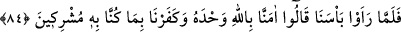
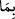
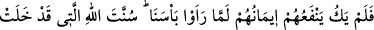
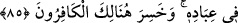
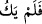

kıldığım bütün namazları hep senin sözlerini hatırlayarak kıldım” demiş.
O halde bilginin gereğine göre hareket etmek son derece önemlidir.
84. Artık o çetin azabımızı gördükleri zaman: Allah’a inandık ve O’na ortak
koştuğumuz şeyleri inkâr ettik, derler.
Önceki tekzibçi milletler bizim “o çetin azâbımızı” yâni dünyadaki azabımızın ne
denli şiddetli ve sıkıntı verici olduğunu “gördükleri,” artık kaybetmiş olmanın getirdiği
o hâlet-i ruhiyeye düştükleri “zaman” başka bir şey diyemeyip “Allah’a inandık,” tek
olan Allah’a, “ve O’na ortak koştuğumuz şeyleri inkâr ettik, derler.”
“ ” ifadesi, “O’na îman etmemiz sebebiyle” demek olup putları kasdetmektedirler.
“Azâb-ı beîs” ifâdesi de “be’s”ten gelmekte olup “şedîd yâni çok şiddetli” demektir.
Âyetin başındaki “fâ” salt takip ve sonrasının öncekinin hemen akabinde
gerçekleşerek ona tâbi olduğunu ifâde etmektedir. Çünkü yukarıdaki “Peygamberleri
onlara gelince” ifâdesinin zımnen onların “inkâr etmeleri” olduğu anlaşılmaktadır.
Böylece sözün toplamı, “fakat inkâr ettiler; sonra o şiddetli azabımızı görünce de îman
ettiler” değerinde olmaktadır.
85. Fakat azabımızı gördükleri zaman imanları kendilerine bir fayda
vermeyecektir. Allah’ın kulları hakkında süregelen âdeti budur. İşte o zaman
kâfirler hüsrana uğrayacaklardır.
Evet îman ettiler; “fakat bizim azâbımızı gördükleri zaman” yâni azabımızı bizzat
görüp içine düştüklerinde öylesine “îmanları” yâni vahdâniyetimizi mecburen tasdik
etmeleri, böyle bir îmanın kabûl edilmesi normalde mümkün olmadığı için,
“kendilerine bir fayda vermeyecektir.” Ki âyetin devamında geçen “Allah’ın kulları
hakkında süregelen âdeti budur” ifadesi de buna delâlet etmektedir. Zira azap bizzat
gözle görüldüğü anda teklif kalkar. İman denen şey ise teklif anında geçerli ve
makbuldür, yeis ânında değil. O îmanın geçerli ve makbul olması imkânsızdır; çünkü
kendilerine emredildiği zaman îman etmemişlerdi. “Bu, sahih ve doğru bir îman
olmamıştır” anlamında “
” denmesinin nedeni de budur. Çünkü “
: fayda
verecek değildi” demek, îmanın hiçbir fayda sağlamadığını ifâde etmek bakımından,
direkt “
: fayda vermedi” demekten daha belîğdir. Buradaki “fâ” da (ibarede yer